| 日付 | 2014年11月8日（土） |
|---|---|
| メンバー | 家族（妻、長女・3歳、長男・1歳） |
| アクセス | 車 |
昨年に引き続き、今年も子供を連れて水族館に行く。
今回は八景島シーパラダイスに行ってみることにする。
人工島に作られた大型複合施設で、その一角に水族館がある。
9時前に到着。八景島近くの駐車場に車を停める。
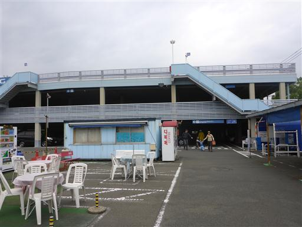
少し歩くと八景島が見えてくる。
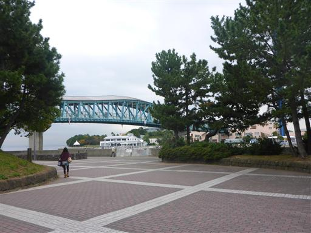
八景島に通じる橋を渡る。
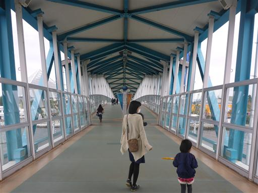
窓から見えるのは川ではなく海だ。曇り空で水は暗い灰色だ。
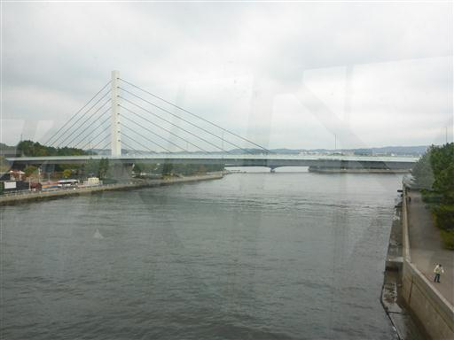
橋を渡ってすぐのところに水族館がある。
八景島シーパラダイスの中でも一番力を入れているのが恐らくこの水族館だ。
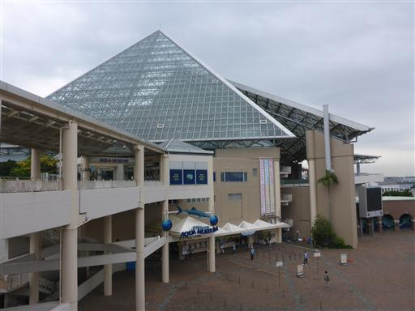
入場料は3000円/人とかなり高めの設定。3才以下は無料なのが救いだ。
入るとまずはきれいな水槽がお出迎え。
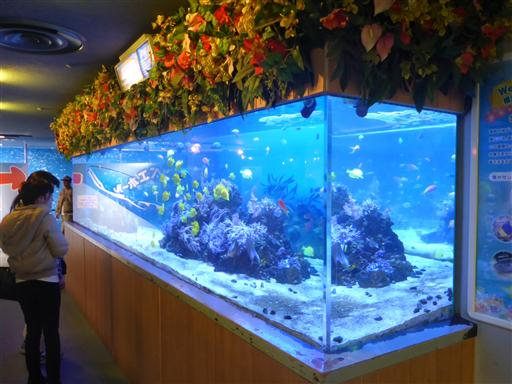
開館直後とはいえ、人影はかなり少ない。
しながわ水族館では開館時に行列ができていたのだが…
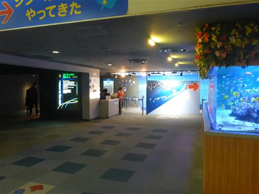
セイウチ。かなりの巨体が元気よく泳ぎまわっている。
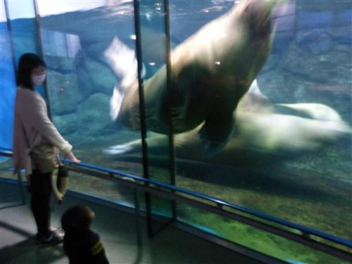
館内最大の水槽。足元から天井高くまで一面ガラス張りなので迫力がある。
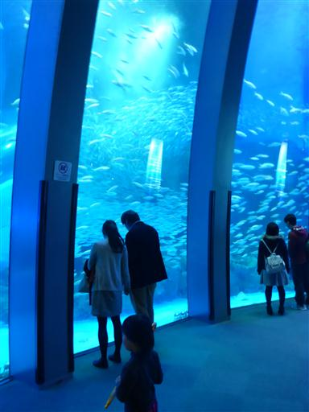
5万尾のイワシの群れが美しい。
ショータイムではイワシの群れが一斉に激しく泳ぎだす。
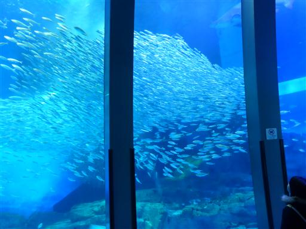
水槽の中のエレベータで上階に行く。
2階に行ってしまうと、4階まで登らないと1階に下りられず、建物の構造が今一だ。
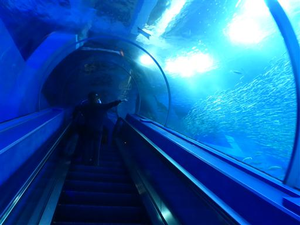
ハナデンシャ。水中を漂っていて、こんな不思議な形の生物は初めて見た。
ウミウシの一種で、日本近海にも住んでいるらしい。
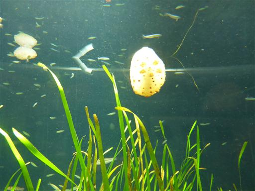
ミズクラゲ。
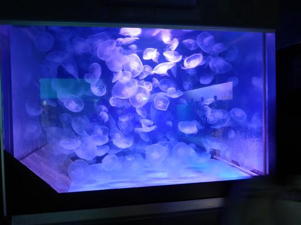
タコクラゲ。
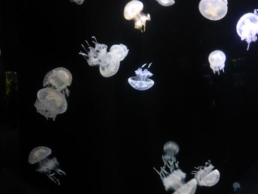
アカクラゲ。クラゲは海では会いたくない生物だが、水族館で展示されていると非常に美しい。
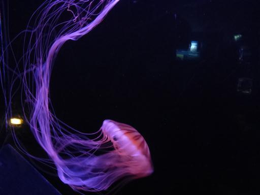
土から顔を出した棒状の不思議な生物。アナゴの一種のようだ。
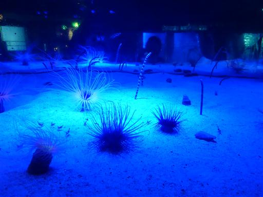
動物ショーの時間になったのでスタジアムに移動。
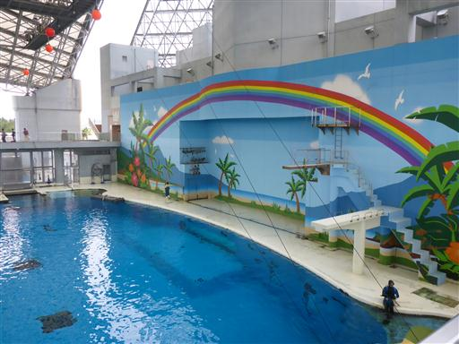
空いているため好きな場所に座ることができる。
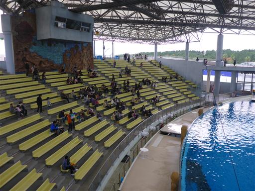
アシカ、セイウチ、イルカなど様々な動物が芸をする。
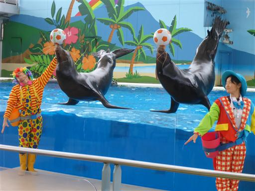
シロイルカのジャンプ。
それなりに面白かったと思うが、娘は途中から飽きていた。
水の音に怖がってずっと後ろを向いていた昨年よりは成長したのかも…
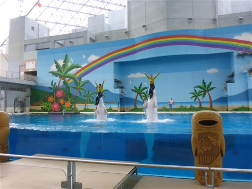
カクレクマノミ。ファインディング・ニモという映画で一躍有名になった。

名前の通り、本当にイソギンチャクに隠れている。
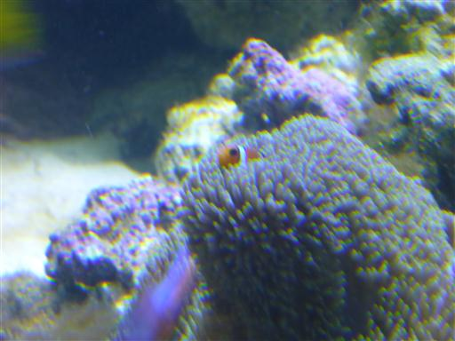
ウミガメ。こちらに寄って来てくれた。
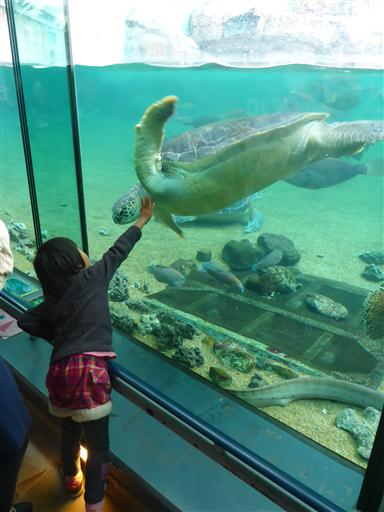
ジンベエザメ。下に小魚がくっついて泳いでいる。
館内最大の魚なので、もう少し展示方法を工夫してほしいところだ。
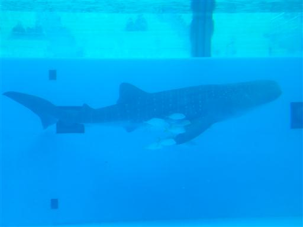
次にお隣のイルカ館に移動する。
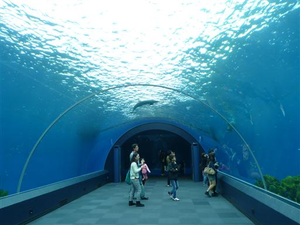
バンドウイルカ。イルカはいつ見ても可愛らしい。
高速で泳ぎまわる姿を見せてくれる。
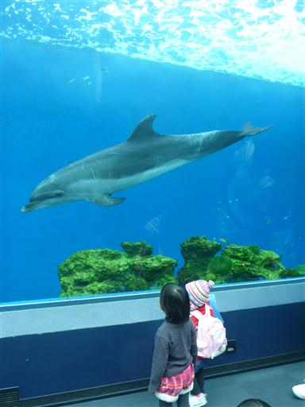
マンボウ。思った以上に巨大だ。
これはこれで可愛らしい。
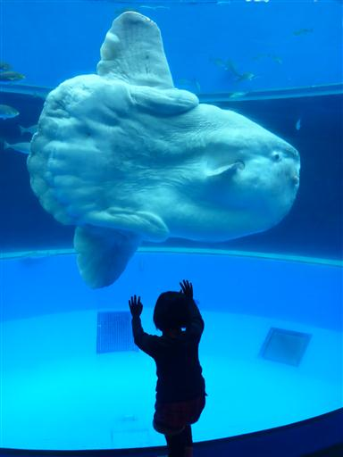
館外に出て、海の生物と触れ合える施設に行ってみる。
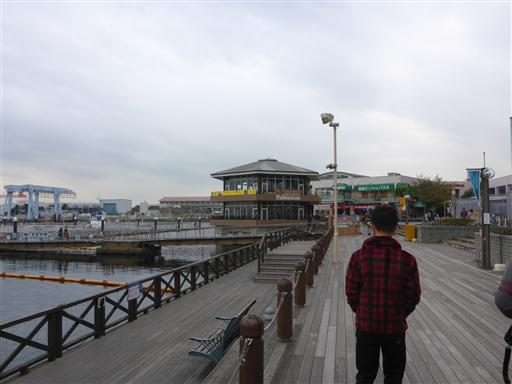
ナマコ、ヒトデなどを少し触る。
追加料金を払えばペンギンなどとも触れ合えるようだ。
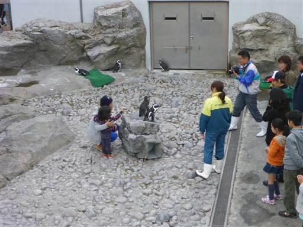
最後に娘が大喜びしたのがこの電車だった…
全体的に料金の高さがネックであり、もう少し安ければもっと賑わうのに、と思う。
イワシの水槽は特に見ごたえがあり、空いてたのでゆっくり見学することができたのは良かった。
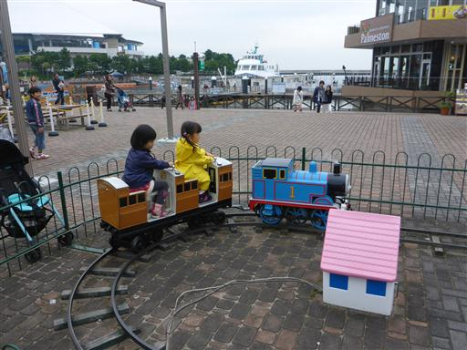